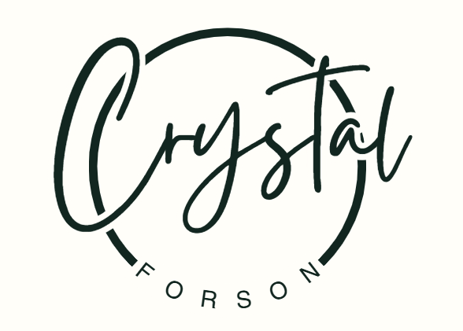

I enjoy working with people to bring ideas and goals to life

I am a motivated student with a strong interest in business-focused roles that involve collaboration, communication, and problem-solving.
I am especially drawn to positions such as Business Analyst, where I can work closely with stakeholders, team members, and decision-makers to understand their goals and help transform ideas and visions into practical, achievable solutions.
I enjoy learning about how organizations operate and how thoughtful planning and analysis can support long-term success.
Through my education, I have developed strong interpersonal, organizational, and analytical skills that allow me to work effectively with others and approach challenges from a business perspective.
I value teamwork and clear communication and am interested in helping bridge gaps between ideas, people, and execution. My career goal is to grow in a professional business environment where I can support innovation,
contribute to meaningful projects, and help organizations bring their visions to life in an efficient and impactful way.